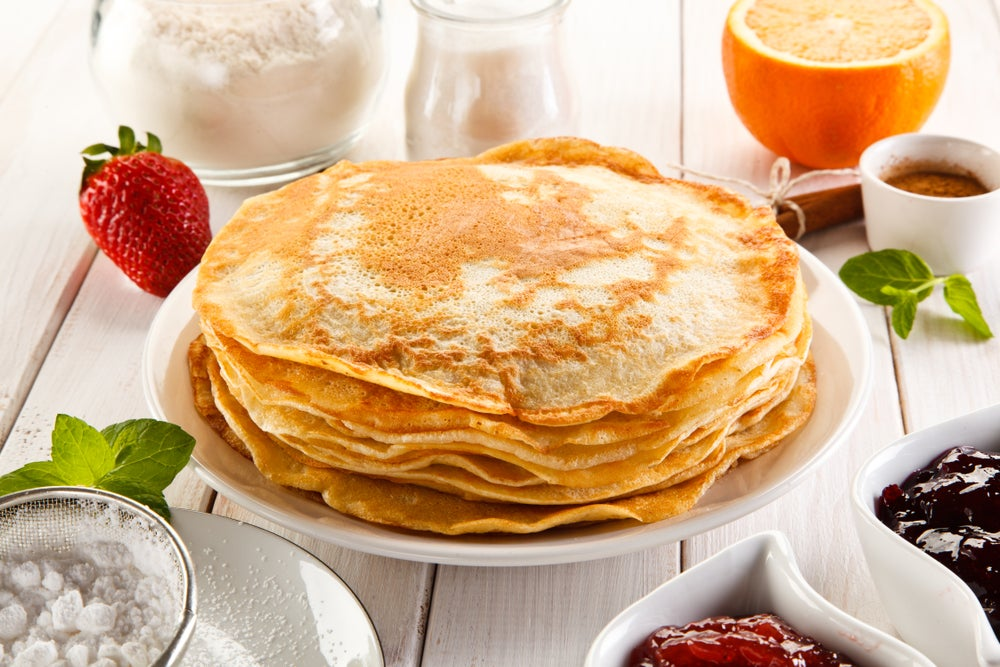

Blinchiki

Do you like torturing yourself early in the morning by standing over an hour in front of the stove?
Well in that case, making those delicious flaps of cooked batter will be right up your alley!
Ingredients
- About 700ml of milk
- 3 eggs
- 300-350gr of flour
- 1 Tbsp of sugar
- A dash of salt
- 1/2 Tsp of baking soda
- Some butter or oil
Steps
- In a large bowl whisk eggs, sugar, salt and soda. Better use a mixer.
- Start adding milk while still whisking.
- Make that mixer work while adding flour and dumping melted butter (or oil) into the mix.
- Check the consistency: your batter must remind you of a thick creamy kefir. If you are unfamiliar with kefir, tough luck. The batter is still very much liquid, but not runny.
- Heat up and grease up a pan, pour a ladle of batter in it, but don't be overzealous! The real Blinchiki thrive when they are thin and porous.
- See the picture above? They must look kind of like that.